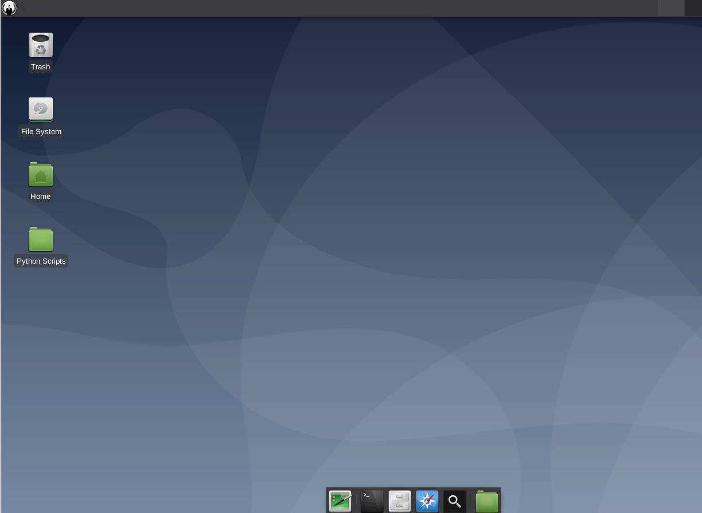

Anonymous Security OS

Anonymous Security OS countains a few penetration testing utilities, this is a brand-new OS based on Debian and it is actively work in progress.
Default Login Information
Username = anon
Password = anonymous
Possibly helpful
Run snap store by running this command in terminal : snap run snap-store
Run Telegram by running this command in terminal : snap run telegram-desktop